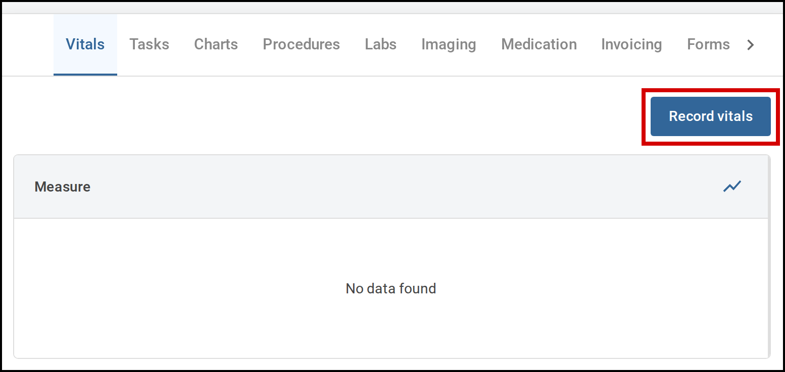
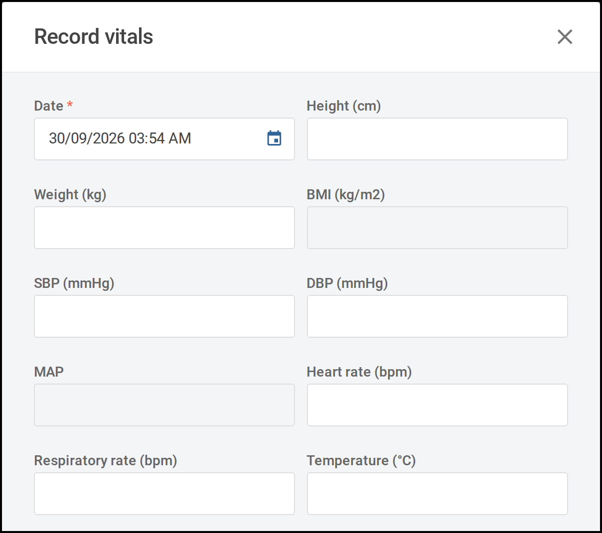
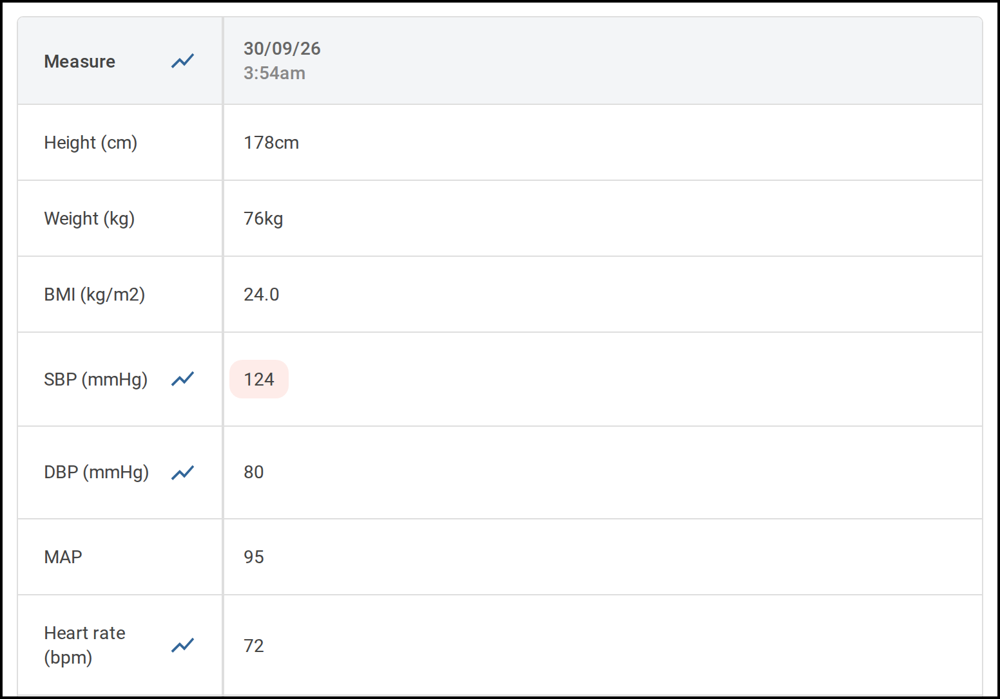

10.1 Record a set of vitals
Record a patient's observations against the encounter they are admitted under. Start from the patient's encounter.

Steps
-
Open the Vitals tab.The table lists every set of vitals already recorded for this encounter. If none have been recorded yet, it shows No data found.
-
Select Record vitals.The Record vitals window opens.

The Record vitals window opens with the date and time filled in. -
Check the date and time at the top of the form.They are filled in with the current date and time. Change them if the observations were taken earlier.
-
Enter the measurements you have taken.Fill in only the fields you have readings for and leave the rest blank. You need at least one reading to record. Some fields work themselves out from other measurements and cannot be typed into.
-
Select Record.The window closes and your readings appear as a new column at the left of the table. The most recent set of vitals is always the first column.A reading outside the normal range for the patient's age is highlighted. Rest your pointer on it to see the normal range.

Your new reading appears as the first column of the table.
Reference: what a user guide looks like. The worked example behind the user guide format, showing 10.1 Record a set of vitals as a reader meets it: numbered steps with one action each, on-screen labels in bold, and screenshots cropped to their step with a thin border, a red outline on the control to select, and a caption. The site chrome is illustrative, not a design for a documentation site.